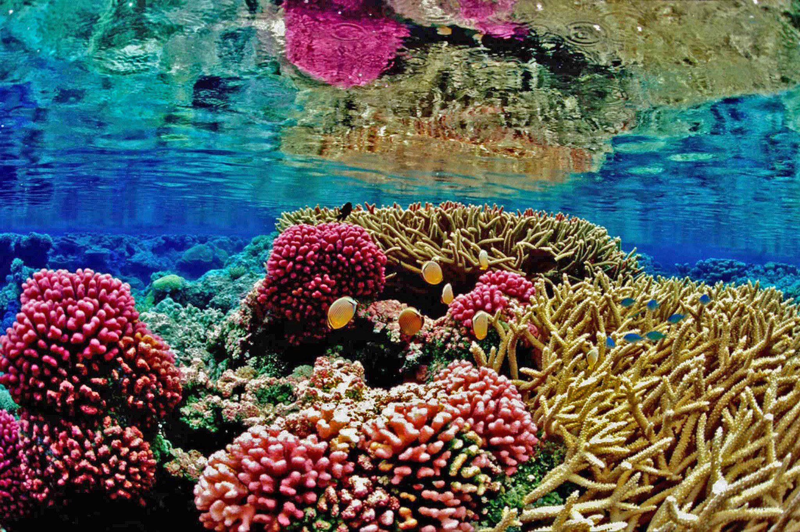
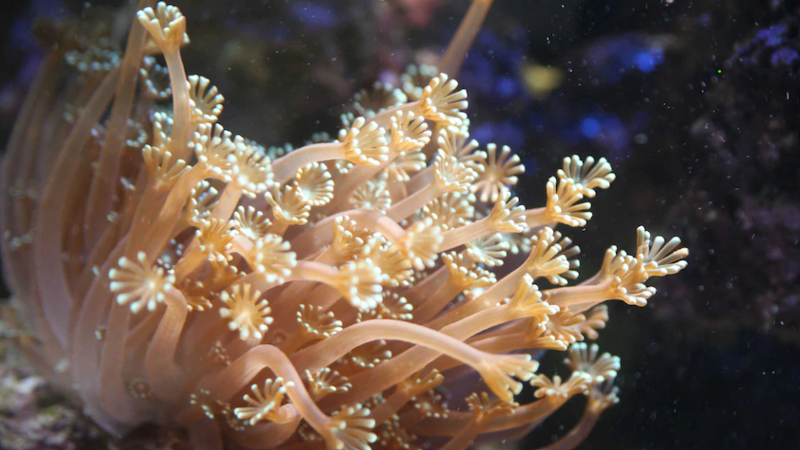
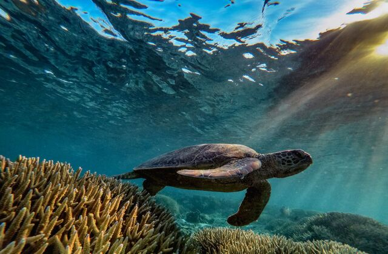
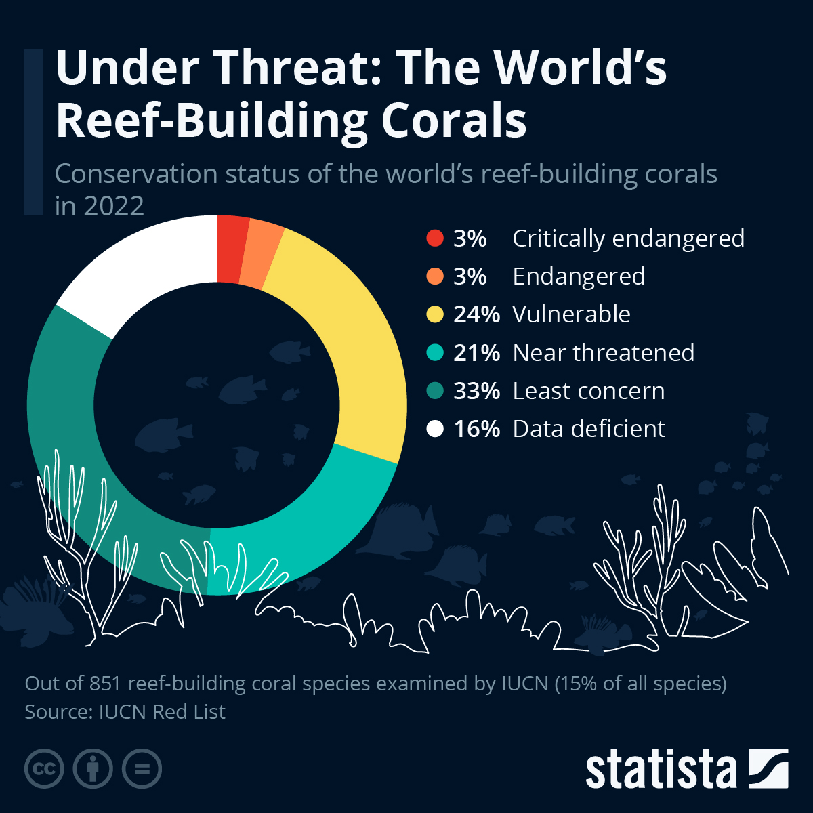

Coral Reef Bleaching: A Looming Threat to Ocean Ecosystems
Coral reefs are like homes for many marine animals. They are like a community or neighborhood for the fish and other animals and are called “rainforests of the ocean”. 4000 different species of fish can inhabit just a single coral reef which is wild when you consider just how small coral reefs are. Coral reefs are one of the most spectacular ecosystems on the planet, being a habitat for almost 25% of all living marine species. They cover less than 0.1% of ocean surface area but have such a humongous impact on marine life being one of the most important and diverse habitats on planet Earth.

healthy corals
I want to ask you though “What are corals?
Coral reefs are living beings just like you and me. So are they plants or animals? Corals aren't at all plants, they are animals. More specifically a collection of thousands of animals. The individual organisms that corals consist of are small, colonial, invertebrate animals called polyps. What makes polyps so special is that when they find a place to inhabit (mostly hard, uneven, rocky surfaces), they start building their skeleton, which is a deposit of limestone (calcium carbonate, a compound that's in copious quantities in the ocean as it dissolves from the rock on land and is carried into the sea by the water.). Corals receive food from their symbiotic relationship with microscopic algae called zooxanthellae, which live in their tissues. These algae use the sun to perform photosynthesis and give the corals some energy. Corals get 90% of their food via this. In return, the corals shelter the algae. It is due to the zooxanthellae that corals have their infamous vibrant colors. Since it's the algae that gives the corals their color, when separated, the white flesh of the coral underneath would be exposed. This is exactly what happens in coral bleaching. When water is too warm, corals expel the zooxanthellae that are living in their tissues causing the coral to turn completely white.

“Without a healthy ocean we can't have a healthy planet”, the ocean occupying approximately 71% of the earth's surface has a major say on the overall development of the planet, and lately it hasn't been in the best conditions, a contributing factor of this being its coral reefs. You may have heard that our corals are dying, but what does that mean? Due to the increase in global warming, it's a well-known fact that the mean temperature of the earth is rising, which is making the corals expel their zooxanthellae. Thus the corals are turning completely white as a result. It's due to the waters around the corals becoming increasingly warm that they start bleaching. Sadly due to this, like other natural habitats on earth, coral reefs are also disappearing quickly. It is estimated that 10% of the earth's reefs have already been killed and 60% of them remain in extreme danger.
The size of the impact of coral bleaching is huge. According to the Intergovernmental Panel on Climate Change (IPCC), 70–90% of coral reefs could be wiped out by 2050, even if global warming is kept to 1.5°C above pre-industrial levels. Some scientists predict that coral reefs could be completely gone by 2100. Temperatures just 1-2 degrees Celsius above the normal summer maximum for a few weeks can create heat strain and can cause corals to bleach. Coral bleaches used to be very rare and sparse but over the last two decades, marine heatwaves and heat strain has caused widespread intense bleaching. You can see bleached coral reefs from kilometers away as they are said to virtually glow, some researchers say they glow as a form of “sunscreen” to try to get zooxanthellae to return.
I'm sure you've heard of the Great Barrier Reef, which is the largest living structure on the planet and stretches over 2300 km. It's also one of the most popular coral reefs in the world. It is located in the Coral Sea, off the northeastern coast of Australia. However, according to a 2020 study, the Great Barrier Reef's remaining corals could vanish within the next century if global warming isn't curbed. 3 of the 5 of the most major bleaching events have occurred over the last 5 years in the Great Barrier Reef. Back-to-back bleaching events occurred for the first time in the GBR (Great Barrier Reef) in 2016 and 2017, for two consecutive summers, and ⅓ of the coral reef was affected. By the end of the century, it is predicted to have back-to-back bleaching events every consecutive summer.

So the coral reefs are bleaching themselves but why should we care?
Here's why. Global warming has many disastrous effects on the planet; coral reef bleaching might be one of the most significant of them. Coral reefs are profound and complex ecosystems that can’t be replaced easily, kind of like nonrenewable energy sources. Therefore they must be preserved properly. We know that an enormous amount of marine animals depend on reefs and continue to face disastrous consequences when they bleach. But coral reefs are not only beneficial to marine animals, they are also useful to us humans. Coral reefs provide a livelihood to many through occupations like fishing and direct extraction, processing, and sale of reef resources. Beyond the surface, they support the occupations of marine biologists, scientists, environmental experts, and even tourism industries. Coral reefs support the livelihoods of over a billion people, or 13% of the global population, who live in coastal regions near them. They provide jobs in tourism, fisheries, and other marine industries. Thus it is proved that a lot of people around the world are dependent, or partly dependent, on coral reefs for their livelihoods. Reefs are a source of food and income for over 500 million people. Just in terms of the Great Barrier Reef, The Reef contributes $6.4 billion to the Australian economy and 90 percent, or $5.7 billion, is from tourism.

Despite the environmental betterment aspect, there are many aspects to why we should care about the coral reefs. In fact, if the corals bleach much further we all will be affected along with the oceans. So what can we do about it? we know what to do, we all know exactly what to do (we need to use our cars less, carpool, not be wasteful, recycle, etc.) it's just up to us to do it. I don't want you to read this article and forget about it tomorrow. If we all do a little bit I'm sure we can help reduce the harm to our precious corals. If not for us at least for the fish and marine animals. Our earth is in our hands and our hands only.
Conclusion
Coral reefs, the vibrant and life-sustaining ecosystems of our oceans, are facing an existential threat due to global warming and human impact. The bleaching of these reefs is not just a loss for marine life but for the entire planet, including the communities and industries that depend on them. The decline of coral reefs serves as a stark reminder of how intertwined our lives are with the health of our oceans. While the situation is dire, there is still hope. By taking responsibility for our actions and reducing carbon emissions, we can help mitigate further damage and preserve these vital ecosystems for future generations. It's up to all of us to act now to ensure the survival of coral reefs and the countless species they support. The future of our oceans—and our planet—depends on it.